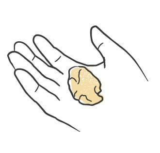
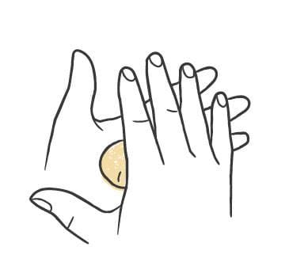
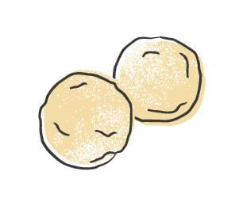
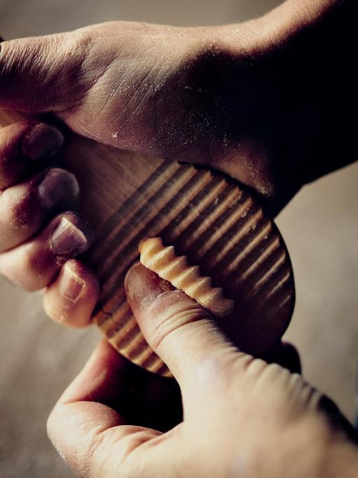

Pasta / Shapes
Gnudi
- Rest
- chilled at least 1 hour, up to 24 hours
- Source
- Pasta, Missy Robbins
- Formed
- dumpling
- Region
- Tuscany around Arezzo, and Lombardy near Brescia
Shaping




Method
- Dust a wooden board with a little 00 flour. Line a sheet pan with parchment, then dust the parchment with semolina.
- Portion the gnudi dough into 15g pieces with a small spring scoop or a tablespoon measure, working in batches onto the board.
- Flour both hands with 00 and roll each piece into a sphere 1 1/2 inches across. Set them on the pan in one layer and dust the pan again with semolina so they do not stick.
- Cover with plastic wrap and refrigerate at least 1 hour, up to 24 hours.
Notes
- Piece size is 15g, rolled to a 1 1/2-inch ball, about the size of a chestnut. In Lombardy they are often made larger and called malfatti.
- No sheeting, no board, no cutting tool. A spring scoop keeps the portions even, and dusted hands keep the dough from smearing.
- Gnudi use their own dough, which is not one of the doughs in this collection: eggs, flour, ricotta, parmigiano, nutmeg, and greens (usually spinach, chard, or nettles) that are blanched, squeezed dry, and chopped fine. These are ravioli filling cooked without the pasta around it.
- Refrigeration is a required step, not just storage. Chill at least an hour before boiling in salted water.
- Served with butter and sage. Red sauce also works.